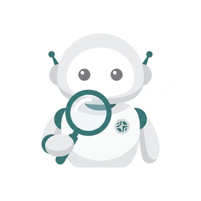
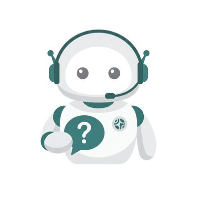
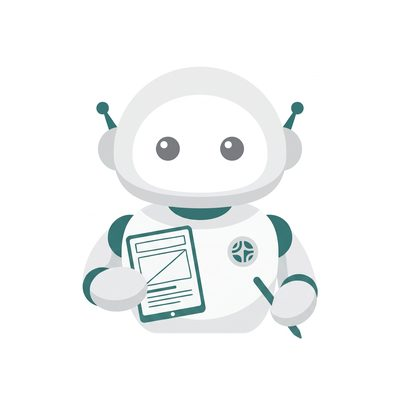
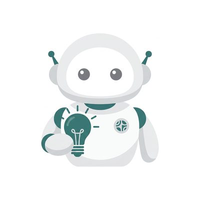
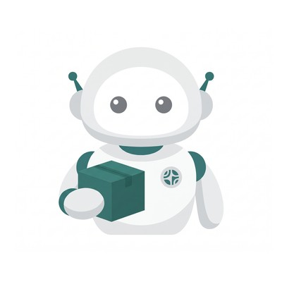
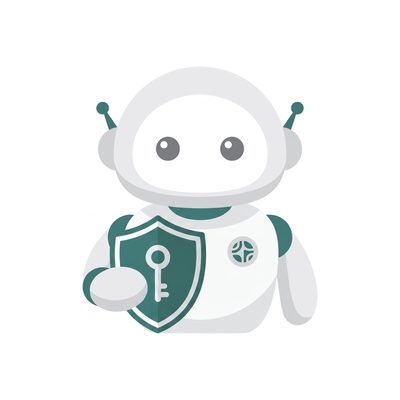
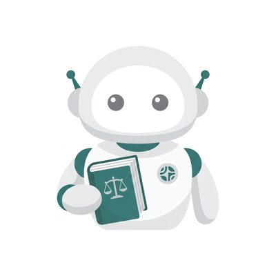
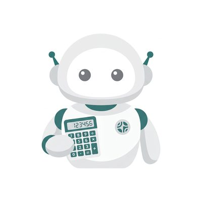
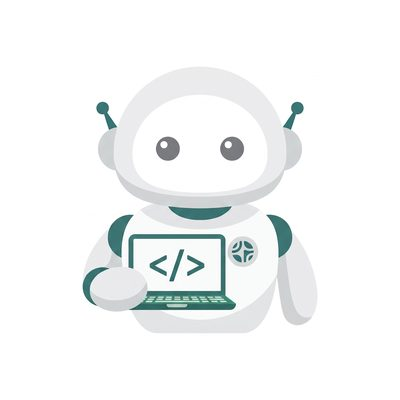

学ぶ
- ChatGPT / Claude 活用の教育・
研修 「触ったことはあるけど、仕事に使えていない」社長・社員の方へ。
御社の実際の業務を題材に、明日から使える活かし方をお伝えします。 - AI開発ツール活用の教育・
研修（Claude Code / Codex） 社内の面倒な仕事を1つ選び、AI社員として一緒に作ります。
作った後も、自分たちで直せる形で引き渡します。
経営と現場の両方を知る目線で「本当に使われる」AIを設計し、少ない人数で生産性を上げる会社をつくります。
AIは作業を、判断は人が持つ。
無料相談する「触ったことはあるけど、仕事に使えていない」社長・社員の方へ。
御社の実際の業務を題材に、明日から使える活かし方をお伝えします。
社内の面倒な仕事を1つ選び、AI社員として一緒に作ります。
作った後も、自分たちで直せる形で引き渡します。
秘書AI・リサーチャーAIなど、すでに動いている型から導入。
御社の業務に合わせて調整し、月額顧問で伴走します。
ベテランの頭の中にある判断基準を聞き取り、AI社員に移します。
人が辞めても、ノウハウが会社に残ります。
判断するのは人です。AI社員は、御社の仕事を覚えるほど、任せられる範囲が広がっていきます。
※ここでの「社長」は、AI社員を導入される御社の社長（お客様）のことです。
| 役職 | 社長との関わり方 |
|---|---|
| 新人 | 社長が指示 → AIが作業 → 社長が確認 |
| 主任 | AIが下書き → 社長は「OK」を出すだけ |
| 課長 | AIが自分で動く → 社長は結果の報告を見るだけ |
| 部長 | AI同士で仕事を回す → 社長は月次で方針を出すだけ |
送信・支払い・契約などの最終判断は、どの役職でも社長が行います。
入社済み
主任
担当：社長のメール対応
入社済み

新人
担当：競合調査
入社済み

新人
担当：お客様からの問い合わせ対応
入社済み

新人
担当：告知・採用・キャンペーンのページ制作
このページもWEBデザイナーAIが制作しました
入社済み

新人
担当：事業アイデアを1枚で判定（GO／小さく試す／保留／やめる）
入社済み

新人
担当：在庫のチェックと発注の準備
入社済み

新人
担当：公開前・導入前の点検
入社済み

新人
担当：契約書の一次チェック
研修中
SNSマーケティング担当
研修中

経理担当
研修中

システム開発担当
研修中
コンテンツ制作担当
住まいへの「想い」を大切にする、つくば市のリノベーション・リフォーム・新築の住宅会社。
稼働中
創業50年以上の窓・玄関ドアリフォーム専門店。
納品済み
ビジネス交流会の出欠をQRで自動記録
Google Apps Script来訪者の情報をDiscordに自動で共有
Google Apps Script自社で運用中・販売はしていません
潮流を読み、海流を捉え、ソナーでクジラを探す。
下の3つの判断を統合する
景気や金利など、相場全体の環境を読む
どの業種に資金が流れ込んでいるかを捉える
機関投資家が動き始めた兆しを探す
自社運用のみ・投資助言は行いません。
伊原 敏明（いはら としあき）MARQIA 代表
ベンチャーキャピタル、エンタメ事業会社での新規事業開発、AIスタートアップ、SaaS系上場企業の経営企画室を経験。
現在は出張専門の中古車買取店を経営。
自分の店で使う秘書AIを自作したのが、MARQIA（マルキア）の始まり。
米国株のトレードAI「WAKE」も自社で運用中。早稲田大学大学院理工学研究科修了（専門：生化学）。茨城県在住。